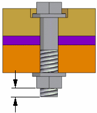

Fastener System dialog box
Displays a list of fasteners based on the information you define in the Top Hole and Bottom Hole steps and the fasteners in your database.
- Selection Type
-
Specifies the types of fastener components to place in the assembly.
- Bolt components
-
When selected, the selection filter displays bolts and screws information, listed by category and specification, that match the hole attributes.
- Top stack components
-
When selected, the selection filter displays nut and washer information, listed by category and specification, that match the hole attributes.
- Bottom stack components
-
When selected, the selection filter displays nut and washer information, listed by category and specification, that match the hole attributes.
- Standard
-
Specifies the fastener standard that you want to use. When you change the active standard, you should click the Update button to rerun the database query.
- Update
-
Reruns the database query. You should click the Update button whenever you change the active Standard.
- Select from Library
-
Displays the Standard Parts dialog box so you can select fasteners from a standard parts library.
- Add Fastener
-
Expands the dialog box so you can add the selected bolt, screw, nut, or washer to the selected hardware component.
- Selected bolt
-
Displays the selected bolt or screw you want to place in the assembly.
- Bolt Length
-
Defines the bolt length for the fasteners you are placing. The bolt length can be defined using one of two methods:
-
Minimum extension
-
User-defined length
The Minimum extension option is displayed when placing a bolt in a through hole that is threaded or non-threaded.
When you set the Minimum extension option and the design changes such that the bolt length is no longer valid, the bolt used is updated automatically.
When you set the User-defined length option, and the design changes such that the bolt length is no longer valid, you must update the User-defined length manually to change the bolt that is selected.
- Minimum extension
-
Specifies the minimum distance the bolt protrudes through the nut or a through, threaded hole.

- User-defined length
-
Specifies the length of the bolt.
-
- Top stack
-
Lists the fasteners that you want placed on the Top Hole side of the fastener stack. You specify the fasteners you want and the order they are placed in the fastener stack by selecting the fasteners you want in the Hardware rows. You can edit the fastener order by selecting a row and clicking the Up and Down arrows.
- Bottom stack
-
Lists the fasteners that you want placed on the Bottom Hole side of the fastener stack. You specify the fasteners you want and the order they are placed in the fastener stack by selecting the fasteners you want in the Hardware rows. You can edit the fastener order by selecting a row and clicking the Up and Down arrows.
- Components
-
Displays user-defined custom properties characteristics for the component. You can use the Format Columns dialog box to control the display of these properties or characteristics.
You can also rearrange the columns.
- Saved Settings
-
Displays component settings saved in the Saved Settings list. You can access the saved settings by selecting them from the list.
- Save
-
Saves the current bolt and stack component information settings to the name you type.
- Delete
-
Deletes the saved setting selected in the Save Settings box.
- Copy to working folder
-
Generates the part into the appropriate Standard Parts folder and saves a copy to the local working folder.
- Preview in Assembly
-
Highlights in green the placement of the hardware components in the assembly.
How do I
Place fasteners in an assemblyLook up more details
Fastener System commandFastener System command bar